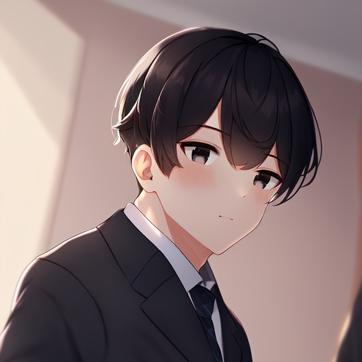
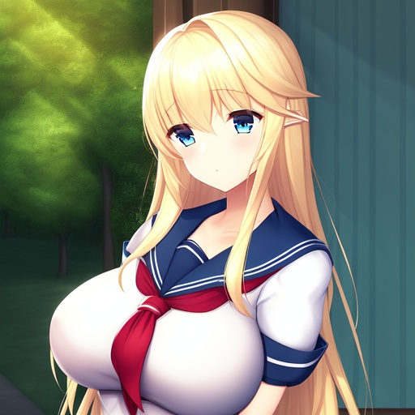

主人公／男子高校生
諸事情から一人暮らし状態だった男子高校生。ララが居候することに。
妹エリカも病院を退院して合流し、三人で暮らしだす。
寂しい生活から一転、にぎやかな学園生活を送ることになる。

逆転移のエルフの少女
エルフ族で本名は「ラーラミン・ハイッペロット・トワイライト」。
異世界から逆転移してきた。どこの国も受け入れずケートの父親が日本のケートの家に住まわせることに。
明るい性格で、いつも楽しそうにふるまう。地球と異世界の常識は違う様で、ぐいぐいくる。
ケートの幼馴染み
近所に住んでおり、ケートの古くからの知り合い。何かと世話を焼いてくれ、エリカの病院の世話もしている。
男であるケートでは相談できないようなこともエリカと話ができることをケートも把握しており、感謝している。
ケートの妹
病気で入院していたが、ララの活躍で退院できるまでに回復、新年度から同じ高校へ進学する。
ケートとハルカ、ララの三人が大好き。エリカは病院でのことで三人に感謝している。
ケートの友達
クラス委員。眼鏡はしていない。親は教育熱心だが、本人は真面目というよりもフレンドリー。
ケートと一緒に遊んだり出かけたりする。
ケートの父親
国家公務員で、安全保障周りを担当している防衛省の職員。今は出向により外務省で海外勤務をしている。
宇宙人や異世界人などを極秘に扱っているらしく、ララの担当職員でもある。
ケートの母親
父親と一緒に海外赴任についていったので、日本国内にいない。結果、ケートは一人暮らし状態だった。
カレーや唐揚げなど、家庭料理は得意で、そのDNAはケートも受け継いでいる。
ケートの担任
高校の担任。まだ若く、生徒から親しまれている。なんやかんや涙もろいところも。
ララの担任でもあり、外部からのあれやこれを裏で処理している苦労人でもあるらしい。